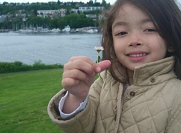

Collection of Poems and Analyses

mother:
one day
i will make you proud
that is all i was
put on this earth to do
anyways
Intro
Poetry can be seen as an encapsulated form of writing. Detailing particular moments through prose, its words can be simple and succinct while still capturing raw emotion. Memories are quite similar- ultra specific and stuck in time. I have decided to write poetry to my mother with the intention of her never reading it, similarly to Little Dog in On Earth We’re Briefly Gorgeous. Through a collection of five poems, I have connected to my inner child and dug up how I have felt in order to reflect and learn from the past. Additionally, this is why the pieces are written entirely in lowercase, as if it were a child writing for the first time. Akin to Ocean Vuong’s character, Little Dog, in On Earth We’re Briefly Gorgeous, I intend to use poetry as a medium to highlight specific moments in my relationship with my mother growing up in order to both reconcile with myself and confront themes of trauma that accompany those moments.
Clearing Your Conscience
Little Dog believes that, in writing these letters to his mother, he can rid himself of all the baggage he carried while she was alive. He sees his past as a kind of shackle he must shatter, saying, “But I wasn’t trying to make a sentence- I was trying to break free,” (Vuong, 4). If he can at least write down the truth about how he felt and everything that happened between them, he can try to reconcile their relationship despite the fact that she will never read or fully understand it. Words can be very powerful, and Little Dog realizes the weight they carry and how telling the truth can set him free of all the guilt and resentment he felt towards his mother growing up. In writing these poems about my relationship with my mother, I am also trying to rid myself of the baggage I carried when I was younger. When I got to college, I opened up to a friend about a lot of the struggles I had with my mother growing up. In doing so, I realized that I never came to terms with a lot of the problems we faced together. I turned to poetry as a way to express my true feelings and to determine if seeing the physical manifestation of the issues we went through in writing would help me come to terms with my past. I have tried to emulate this in my last poem, “grape,” where I take a bite out of a grape in order to try “to understand it/ if just for a moment,” (lines 37-38). In this analogy, I am going back to what reminds me of my mother and analyzing the world from her perspective to better comprehend our relationship and the reason behind some of the choices she made. Due to our history being majority good with pockets of bad, I have had to hone down on the exact moments I am trying to wrap my head around, taking it one step at a time.
No Holding Back
Since Little Dog’s mother was illiterate, she can’t read any of the letters he writes to her. In a way, this allows him to fully express himself in a way that he never felt possible, saying
“The very impossibility of your reading this is all that makes my telling it possible,”
(Vuong, 113).
He never could tell the truth to her for fear of how she would respond, since at points she did get physically violent with him. Knowing that she will never read his words grants him the permission within himself to tell the whole truth about, not just his feelings towards their relationship growing up, but also about stories he never got to tell her. Similarly, I never showed my mother any of the poetry I wrote for fear of how she would react. In a way, I also didn’t want her to feel guilty for how she acted, or fear that she didn’t raise me well enough, so I never shared these with her. Writing to someone with the intention of them never reading it allows me to say everything I’m feeling, whether it’s hurtful to the person or not. There is a kind of honesty that comes only when you feel as if no one else is going to listen, and that comes to me when writing poems that I know the recipients will never lay their eyes on. In this way, I can then delve deeper into my true feelings behind the situations I’ve been in, such as the night I mention in my fourth poem, where I realize it was because of my parents that I had to force myself to grow up. With this realization, I regret my decision only because I see part of my emotional journey reflected in my parent’s current emotional states and I don’t wish to embody the negative aspects that accompany that. But in the same vein, growing up too quickly has made me numb to expressing emotions and maturity has stunted my ability to connect with others in certain situations.
Conclusion
I have learned a lot about myself while completing this project. I tend to overthink a lot of things in my life, hyper fixating on events until it consumes every waking thought. Writing about these times has helped me to process my feelings and overcome the negative. Similar to Little Dog, I have found solace in knowing that I can write without the idea of anyone reading it, and therefore am able to be my truest self. Overall, I have been able to make steps towards internally reconciling my relationship with my mother through this poetry, and even though my mother may not know it, I have come to terms with our past and can carry on better for our future.